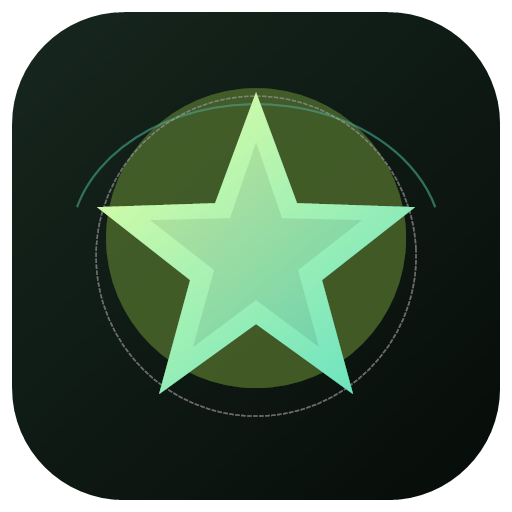
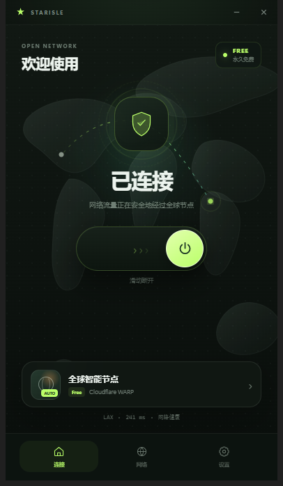

全球智能节点
连接时由 Cloudflare 自动选择更合适的边缘城市，通常为洛杉矶西海岸出口。

星屿STARISLE 下载 Windows 版免费、轻量、只有一个全球节点。点击开关，让 Cloudflare WARP 自动为你选择距离最近的国外出口。

SIMPLE BY DESIGN
没有复杂节点，没有套餐弹窗。打开、连接、离开。
连接时由 Cloudflare 自动选择更合适的边缘城市，通常为洛杉矶西海岸出口。
网络流量通过 Windows 隧道传输，不止浏览器，支持的应用也能自动使用 VPN。
默认开启启动连接和断线重连。关闭窗口后仍可在系统托盘保持 VPN 运行。
ONE NODE · ZERO CLUTTER
星屿只保留一个“全球智能节点”。Cloudflare 会根据你的位置和网络质量动态选择出口， 界面会直接显示当前城市、延迟、流量和隧道健康状态。
READY TO CONNECT
解压后直接运行。体积约 158 MB，适用于 64 位 Windows 10 和 Windows 11。
GET STARTED
下载页面顶部的 ZIP 文件。请先完整解压，再运行里面的 StarisleVPN.exe。
点击或向右拖动中间开关。连接成功后即可看到出口城市、延迟和网络健康状态。
QUESTIONS
当前版本使用 Cloudflare WARP 的免费消费者服务，不需要购买星屿套餐。未来的可用性和免费政策取决于 Cloudflare。
星屿是连接界面，实际隧道由 Cloudflare WARP 建立。为了让所有 Windows 应用都能通过 VPN 联网，需要先安装官方 WARP 系统组件。
没有固定节点列表。Cloudflare 会自动选择较合适的出口，当前测试通常连接到美国洛杉矶，实际位置和延迟会随网络变化。
当前程序没有购买商业代码签名证书。确认文件来自本页面后，可以选择“更多信息 → 仍要运行”。
免费公共网络可能受到运营商、地区或 Cloudflare 服务状态影响。请确认 Cloudflare WARP 服务已安装并运行，然后重试。
THE OPEN SKY
一个节点，足够抵达更远的地方。
免费下载 ↑